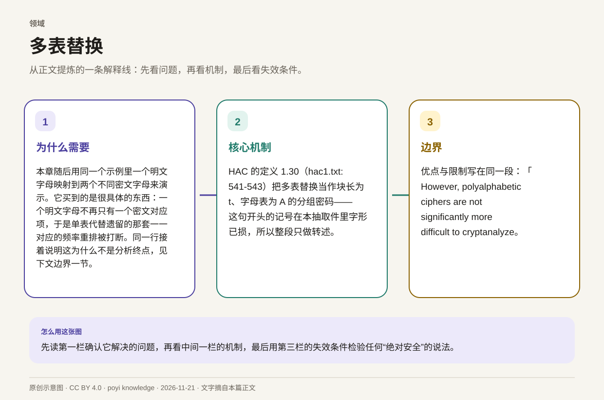

原理与机制
领域：多表替换（Polyalphabetic Substitution）。HAC 的定义 1.30（hac1.txt:541-543）把多表替换当作块长为 t、字母表为 A 的分组密码——这句开头的记号在本抽取件里字形已损，所以整段只做转述。固定密钥的那一小句直接引用：「the key space K consists of all ordered sets of t permutations (p1, p2, ..., pt), where each permutation pi is defined on the set A」（密钥空间 K 由 t 个置换的全部有序组 (p1,p2,…,pt) 构成，每个 pi 都是定义在 A 上的置换）。块内位置决定用哪一个置换；解密密钥是各逆置换的有序组，而这一行把上标压缩成 p-1 1、p2-1 这类形状——这也是形式部分在此只做转述、只引用存活文字段的原因。

为什么重要
优点在 hac1.txt:548 说得很直接：「Polyalphabetic ciphers have the advantage over simple substitution ciphers that symbol frequencies are not preserved.」（多表代替相对单表代替的优点是符号频率不被保留）。本章随后用同一个示例里一个明文字母映射到两个不同密文字母来演示。它买到的是很具体的东西：一个明文字母不再只有一个密文对应项，于是单表代替遗留的那套一一对应的频率重排被打断。同一行接着说明这为什么不是分析终点，见下文边界一节。
应用与实例
HAC 给出的实例是例 1.31，即 t=3 的维吉尼亚密码（hac1.txt:544）；该小标题里名字的带重音字母在本抽取件里被印成以反引号收尾的 Latin-1 序列，所以本文用修正拼法书写并按行号引用，不作逐字引用。这一类别并不局限于换表密码：hac1.txt:680 描述一个乘积构造，其第一段 「is a polyalphabetic substitution cipher」（是一个多表代替密码），第二段是转置；hac1.txt:710 统计的是例 1.31（即 hac1.txt:544 引入的 t=3 那个密码）的密钥空间为 (26!)3；第 680 行那个乘积构造是另一个例子（例 1.35，见 hac1.txt:678），该节给出的密钥空间是 26 = 64。第 710 行的近似号在抽取里丢失，所以量级印作 7 × 1079。可见本章既把它当作古典换表族，也把它当作乘积密码的一个部件。
边界与攻击面
优点与限制写在同一段：「However, polyalphabetic ciphers are not significantly more difficult to cryptanalyze, the approach being similar to the simple substitution cipher.」（然而多表代替并不比单表代替难分析多少，思路与单表代替相近）。本章点明的路径是周期恢复，那句里存活的部分是 「once the block length t is determined, the ciphertext letters can be divided into t groups」（一旦块长 t 被确定，密文字母就能分成 t 组）；紧接着对各组的定义含有被抽取成空白的不等号记号，所以转述到此为止。hac1.txt:710 给出最锋利的一条告诫——大密钥空间与弱密码可以并存：「Exhaustive search of either key space is completely infeasible, yet both ciphers are relatively weak and provide little security.」（两个密钥空间都无法穷举，但这两种密码都相对脆弱、提供的安全很少）。这句话的指称是精确的——它点名的两个密钥空间属于例 1.25 的单表代替与例 1.31 的多表代替——该条目守住这个范围，不把它外推给其他密码。
历史与背景
这份留存件是一章正文，不是这一构造的历史：第 1 行说明它取自 CRC Press 一本手册的章节（该行署 1996 年，而第 6 行版权行符号被损坏并写作 1997 年），hac1.txt:541 的定义 1.30 是以定义的形式给出，不是以归属的形式给出。本章的注释与进一步参考一节（1.14，小标题在 hac1.txt:1618）在 hac1.txt:1636 说明对称密钥加密有很长的历史、由 Kahn 记载，并把 Denning 第 2 章列为进一步的来源；但那条注释和本留存件的任何其它行都没有点出多表替换的提出者或年代，所以该条目只记录手上这份材料能支撑的部分：本章把该概念当作一个形式化的分组密码族来处理，密钥是 t 元置换组。同一条注释确实顺带点了几个例子——凯撒密码、Vigenère 与 Beaufort 密码、转子机、一次性密钥（running key）密码——并写下 「Most systems invented prior to the 1970s are now of historical interest only.」（20 世纪 70 年代之前发明的多数系统如今只剩历史意义）；那里 Vigenère 的名字被抽取成一段退化的重音符号序列，所以这个名字用自己的话写出而不加引。至于谁最先提出多表密码这类归属，属于本目录其他行的事，这里不搬用。
逐步示例与核验
范围模型
列出属于该条目的代表实体、相邻实体、时间断点与跨域关系；范围外对象不并入。
参考出处
- Wikipedia search entry for 多表替换. https://zh.wikipedia.org/w/index.php?search=%E5%A4%9A%E8%A1%A8%E6%9B%BF%E6%8D%A2
- A Brief History of Cryptology and Cryptographic Algorithms (Dooley, Springer 2013). https://link.springer.com/book/10.1007/978-3-319-01628-3